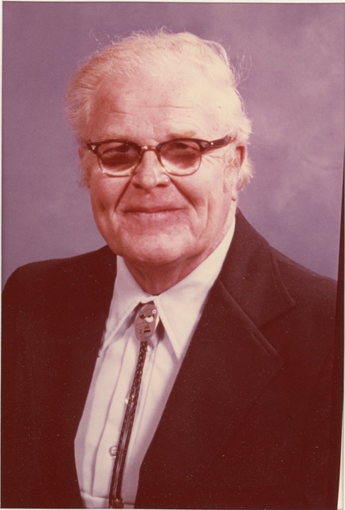

Alden W. “Red” Kelly (26 July 1915 – 15 April 1994) was a Wisconsin-born writer, accountant, church elder, and active member of theater groups in Wisconsin and New Mexico. This page presents a readable selection from the supplied volume, excluding musical settings, duplicate versions, and manuscript revision marks.
Poems & Other Writings
Death Announcement in Albuquerque Tribune: Alden W. (Red) Kelly was born July 26, 1915, in Monico Junction, Wisconsin and born into life eternal April 15, 1994 in Albuquerque. Born John William Ewing, he lost his father in the flu epidemic of 1918 and was adopted at age 4, growing up in Madison. A graduate of the University of Wisconsin, he moved to Albuquerque in 1945. After working for the Bernalillo Mercantile and Linder Burke and Stevenson, he became a Certified Public Accountant in 1952. He worked as a partner and senior partner in several firms and for eleven years in private practice in a thirty three year career. At various times he audited on behalf of the State Racing Commission all of the horse tracks in New Mexico in existence during his professional career. He was preceded in death by his parents, daughter Kathy and son Alan. He is survived by his wife of 54 years, evelyn, daughter Eleanor and son-in-law Theodore W Cooley, all of the home, grandsons Thomas W. and wife Mary of Tucson, Arizona, William I. and wife Janet of Kettering, Ohio, James H. of the home, two great granddaughters and brother Ken Jerney of Idaho. Mr. Kelly was a member of Monte Vista Christian Church, having served in both the choir and as an elder. In both Wisconsin and New Mexico he was active in theater groups. Trophies in both golf and table tennis and published poetry reflect the breadth of his interests and abilitles. Memorial services will be Thursday at 1:30 at Monte Vista with Dr. William Dorman officiating. In lieu of flowers memorials are suggested to Monte Vista Christian Church memorial fund or the New Mexico Boys and Girls Ranch.